MIRAI WO TSUNAGU
ミライをつなぐ
企業の健康経営と、硬式球の再生でつなぐプロジェクト
HAKI proは、健康経営事業を通じて、企業の従業員さまの「からだ」と「こころ」の健康を支えています。また、練習で使い古した硬式球を集めて直し、地域の子どもたちの練習に戻す取り組みも始めました。人の健康も、ものも、大事にしながら長く続けていく。それが私たちの考える循環です。
HAKI proのコンセプトBUSINESS
3つの事業で、人と地域を元気に
01 / 03
WELLNESS
企業の健康経営
従業員等の健康管理を、将来の収益につながる経営的な視点で考えた、戦略的健康推進の実践。
02 / 03
RECYCLE
硬式球の再生
使い古した硬式球を集めて、就労継続支援B型の皆さんが革を張り替え、縫い直します。捨てずに直して、また練習で使ってもらう取り組みです。

 BEFOREAFTER
BEFOREAFTER03 / 03
SPECIALIST
よりそうスペシャリスト
運動の重要性、健康な職場づくりを、数々の困難やプレッシャーと戦い続けてきたトップアスリートと同じ視点で考える。

BASEBALL SCHOOL
HAKI proの野球スクール
元プロ野球選手と大学が共同開発した、スポーツ科学で「打つ・投げる・走る」を測って伸ばすスクールです。

才能を、
科学する。
野球スクールのサイトを見る
TOURNAMENT
子どもが主役の全員野球大会
補欠をつくらず、大人が指示を出さず、子どもたち自身の手で試合をつくる少年野球大会です。
次は、
きみだ！
すべての子どもに、ヒーローになる瞬間を。
第1回大会 2026年11月28日・29日 広島県三原市
HERO's CUP のサイトを見るACTIVITY
元プロアスリートの
苦悩、葛藤を覗いてみませんか？
企業さまでの経営セミナー、健康セミナー、地域のイベント参加など、さまざまな活動を始めました。ぜひ一緒にミライの健康について考えませんか？

with SPECIALIST
トップアスリートと一緒に
私たちは単なるサービス提供者ではなく、皆さまと社会の真のパートナーとなることを目指します。トップアスリート経験豊富なメンバーだからこそ、見えない部分に着目し、誰にも真似できない健康経営を創出していきます。